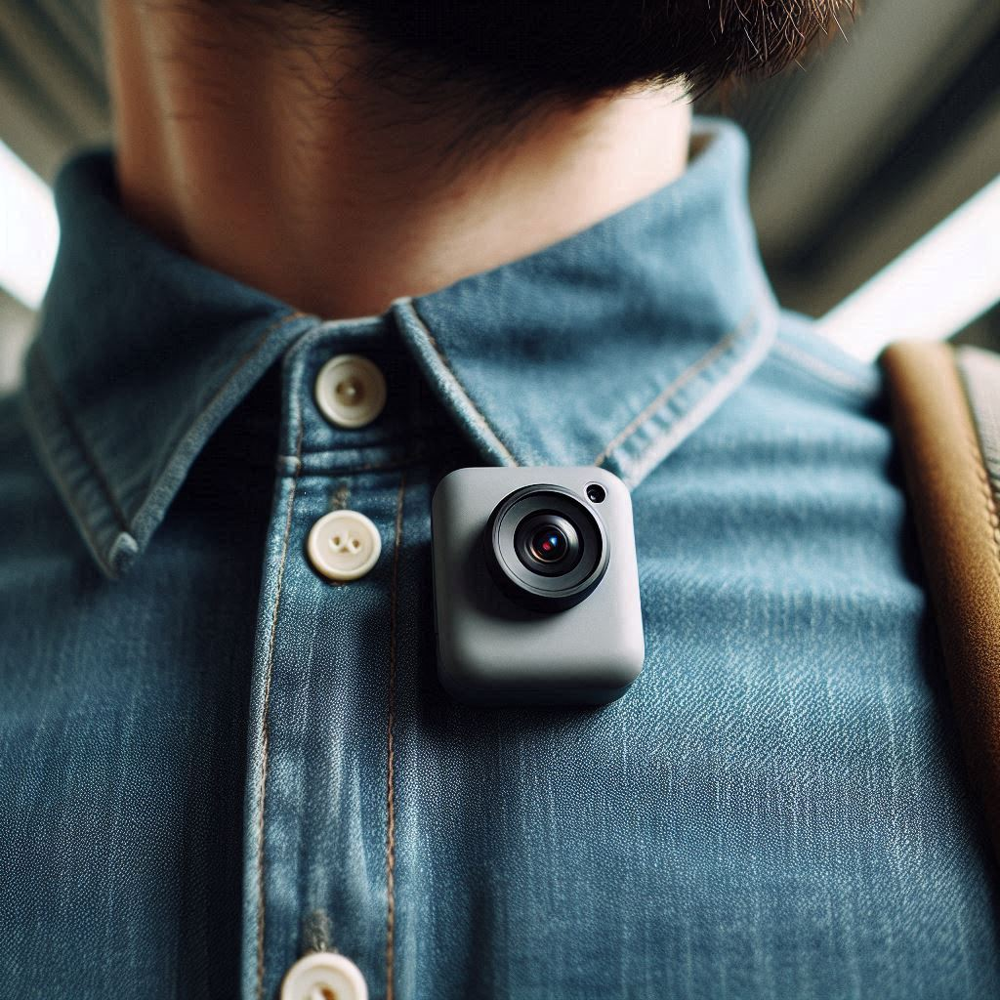

Ontdek REWINDR, de ultieme tool die niet alleen elk kostbaar moment vastlegt maar ook helpt om je dag efficiënt te organiseren. Onze innovatieve camera, klein en discreet, is ontworpen om naadloos in je dagelijks leven te integreren, vast te maken aan je kleding en elk moment vast te leggen zonder onderbreking. Samen met onze slimme planning-app, die je helpt je tijd beter te beheren en belangrijke momenten te plannen, zorgt REWINDR ervoor dat geen enkel belangrijk detail onopgemerkt blijft. Van spontane avonturen tot geplande vergaderingen, REWINDR is je partner in tijd en herinnering.
Met REWINDR mist u nooit meer een speciaal moment. Onze compacte, draagbare camera is ontworpen om discreet aan uw kleding te bevestigen en elk moment in hoge kwaliteit vast te leggen.
Begin met opnemen met slechts één klik. De REWINDR camera is gebruiksvriendelijk en perfect voor dagelijks gebruik, zonder gedoe met instellingen.
Synchroniseer automatisch met de REWINDR app, waar u uw herinneringen kunt beheren, terugkijken en delen.
Onze betrouwbare batterijduur zorgt ervoor dat u van ochtend tot avond kunt opnemen zonder onderbreking.
Uw opnames zijn beveiligd en privé, toegankelijk via een beveiligde account in onze app.
REWINDR helpt u om het leven volledig te ervaren en te bewaren, met de zekerheid dat geen enkel waardevol moment verloren gaat.